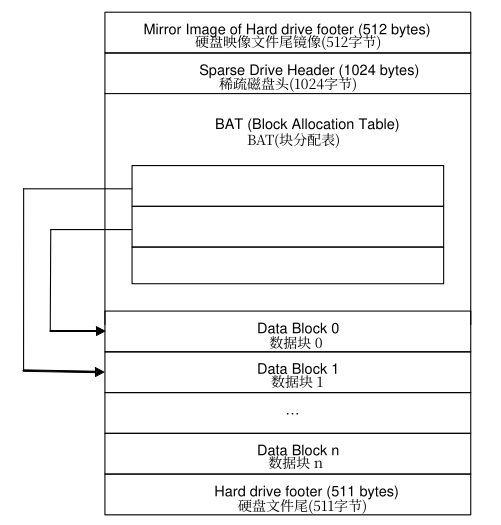
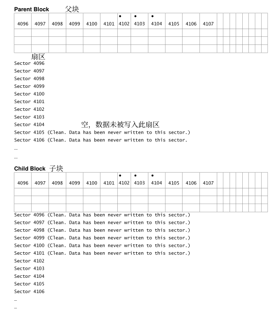

摘要
本文描述了微软虚拟PC和虚拟服务器支持的不同虚拟硬盘格式，并提供了有关如何存储数据的信息。
如评论或提问，请通过电子邮件联系vhdtalk@microsoft.com。
目录
- 引言
- 虚拟硬盘映像类型总览
- 静态硬盘映像
- 动态硬盘映像
- 差分硬盘映像
- 硬盘文件尾格式
- 动态磁盘文件头格式
- 块分配表和数据块
- 动态磁盘实现
- 映射磁盘扇区到块扇区
- 分割硬盘映像
- 差分硬盘实现
- 差分硬盘的写操作
- 差分硬盘的读操作
- 父硬盘映像的识别
- 父硬盘映像的修改
- 附录：CHS计算
© 2005 微软公司。保留所有权利。本规范依据微软开放规范承诺提供。关于微软开放规范承诺的进一步细节，请参见：https://www.microsoft.com/interop/osp/default.mspx。微软拥有与本材料主题相关的专利、专利程序、商标、版权或其他知识产权。除在微软开放规范承诺中明确授权，提供这些材料不代表授予您使用这些专利、商标、版权或其他知识产权的任何许可。
© 2005 微软公司。保留所有权利。
Microsoft、Windows和Windows NT均为微软公司在美国和/或其他国家/地区的注册商标或商标。
文中提及的实际公司名称和产品名称为各自所有者的商标。
引言
本文描述了微软虚拟PC和虚拟服务器产品支持的不同硬盘格式，既不解释硬盘如何与虚拟机连接，也不提供有关ATA（AT附加装置）硬盘或小型计算机接口（SCSI）硬盘的信息，而是聚焦如何以文件形式在主机文件系统上存储数据。
读者应当熟悉虚拟机技术和术语，例如名词客机（guest）、主机（host）在虚拟机架构语境下的运用。用户同样应当熟悉硬盘技术并应当理解数据在现代存储介质上的访问和布局方式。文中使用的术语如下：
系统（System）
指虚拟PC、虚拟服务器，或二者兼有。
绝对字节偏移（Absolute Byte Offset）
指从文件开头开始的字节偏移地址。
保留字段（Reserved）
被标记为保留的字段已被弃用，或留作未来使用。
扇区长度（Sector length）
扇区长度总为512字节。
若无特殊说明，文件格式中的所有值都以网络字节顺序（大端序）存储。同样，若无特殊说明，所有保留字段值需置零。
虚拟硬盘映像类型总览
虚拟机硬盘被实现为位于主机文件系统本地的文件。下列虚拟硬盘格式类型由微软虚拟PC和虚拟服务器支持：
- 静态硬盘映像（Fixed hard disk image）
- 动态硬盘映像（Dynamic hard disk image）
- 差分硬盘映像（Differencing hard disk image）
每种虚拟硬盘映像具有专属的文件格式，将在下面的部分中介绍。
静态硬盘映像
静态硬盘映像是分配了虚拟磁盘大小的空间的文件。例如，如果你创建一块大小2GB的虚拟硬盘，系统将在主机上创建一个大小约为2GB的文件。
为数据分配的空间后是文件尾（footer）结构。整个文件的大小是客机操作系统硬盘的容量加上文件尾的大小。由于主机文件系统的文件大小限制，静态硬盘的大小可能受限。例如，在FAT32文件系统，虚拟硬盘的最大容量为4GB。
动态硬盘映像
动态硬盘映像是在任何时候大小都等于写入的数据加上文件头（header）和尾大小的文件。分配以块的形式完成。每当写入更多数据，文件大小会因分配了更多块而动态增长。例如，一块2GB虚拟硬盘的文件在主机文件系统上最初的大小在2MB左右。随着向映像中写入数据，文件的大小增长到2GB的最大值。
动态硬盘存储用于访问存储在硬盘上的用户数据的元数据。动态硬盘的最大容量为2040GB。实际大小受底层硬盘协议限制。例如，ATA硬盘有127GB的限制。
动态硬盘的基本格式如下表所示。
| 动态磁盘头字段 |
|---|
| 硬盘文件尾备份（512字节） |
| 动态硬盘文件头（1024字节） |
| BAT（块分配表） |
| 数据块1 |
| 数据块2 |
| … |
| 数据块n |
| 硬盘文件尾（512字节） |
每添加一个数据块，硬盘文件尾必须移动到文件的结尾。因为硬盘文件尾是硬盘映像至关重要的一部分，所以文件尾出于冗余目的在文件头中被镜像了一份。
差分硬盘映像
差分硬盘映像通过记录相对于父镜像发生修改的数据块的集合，表示虚拟硬盘的当前状态。此类硬盘映像并非独立；需要依赖其他硬盘格式实现完整功能。父硬盘映像可以是提到的任何一种硬盘映像类型，包括另一个差分硬盘映像。
关于此格式的细节，参见后文“差分硬盘实现”。
硬盘文件尾格式
所有硬盘映像共享基本文件尾格式。每种硬盘类型根据需要扩展此格式。
硬盘文件尾格式如下表所列：
| 硬盘文件尾字段 | 大小（字节） |
|---|---|
| 标识符 | 8 |
| 特性 | 4 |
| 文件格式版本 | 4 |
| 数据偏移 | 8 |
| 时间戳 | 4 |
| 创建应用 | 4 |
| 创建应用版本 | 4 |
| 创建主机操作系统 | 4 |
| 原始大小 | 8 |
| 目前大小 | 8 |
| 磁盘几何参数 | 4 |
| 磁盘类型 | 4 |
| 校验和 | 4 |
| 唯一标识 | 16 |
| 保存状态 | 1 |
| 保留字段 | 427 |
注：早于微软虚拟PC 2004的版本创建的硬盘映像文件尾大小为511字节，因此硬盘文件尾可以位于存放硬盘映像的文件的最后511或512字节。
硬盘文件尾字段描述
下文提供了硬盘文件尾字段的详细定义。
标识符（Cookie）
标识符用于唯一标识硬盘映像的原始创建者。值区分大小写。
微软使用“conectix”字符串作为微软虚拟服务器、虚拟PC和早期产品创建的硬盘映像文件的标识。标识符以八字符的ASCII字符串形式存储，“c”位于第一个字节上，“o”位于第二个字节上，以此类推。
特性（Features）
这是一个用于指示特定的功能支持的位字段。特性的列表如下表所示。未被展示的字段视为保留。
| 特性 | 值 |
|---|---|
| 无特性启用 | 0x00000000 |
| 临时 | 0x00000001 |
| 保留 | 0x00000002 |
无特性启用（No features enabled）：硬盘映像上没有特别启用的特性。
临时（Temporary）：当前磁盘为临时磁盘时设置此位。指定为临时磁盘向应用程序表明，磁盘是关闭时待删除的磁盘。
保留：此位必须始终置1。
所有其他位均被保留，并应置0。
文件格式版本（File Format Version）
该字段分为主/次版本，并与创建文件时的规范版本相匹配。两高位字节为主版本，低位字节为次版本。必须与文件格式规范相匹配。当前规范下，字段需初始化为0x00010000。
主版本仅当文件格式进行不兼容旧版本的修改时才会递增。
数据偏移（Data Offset）
该字段保存从文件开头至下一结构的绝对字节偏移。该字段用于动态磁盘和差分磁盘，但并不用于静态磁盘。静态磁盘此字段需置为0xFFFFFFFF。
时间戳（Time Stamp）
该字段存储硬盘映像的创建时间。数据是从UTC/GMT 2000年1月1日 12：00：00 AM开始的秒数。
创建应用（Creator Application）
该字段用于记录创建硬盘的应用程序。此字段为左对齐文本字段，使用单字节字符集。
如果硬盘由微软虚拟PC创建，“vpc ”将被写入该字段。如果硬盘映像由微软虚拟服务器创建，“vs ”将被写入该字段。
其他应用程序应使用其专属的标识符。
创建应用版本（Creator Version）
该字段存放创建硬盘映像的程序的主/次版本。
虚拟服务器2004置0x00010000，虚拟PC2004置0x00050000。
创建主机操作系统（Creator Host OS）
该字段存储创建磁盘镜像的主机操作系统类型。
| 主机操作系统类型 | 值 |
|---|---|
| Windows | 0x5769326B(Wi2k) |
| Macintosh | 0x4D616320(Mac ) |
原始大小（Original Size）
该字段在创建文件时以虚拟机的视角以字节数形式存储硬盘的原始大小。该字段仅供参考。
当前大小（Current Size）
该字段以虚拟机的视角以字节数形式存储硬盘的当前大小。
该值同原始大小一样在创建硬盘时生成。该值可依据硬盘是否扩展改变。
磁盘几何参数（Disk Geometry）
该字段存储硬盘的柱面（cylinder）、磁头（heads）和每磁道（track）的扇区（sectors）数。
| 磁盘几何参数字段 | 大小（字节） |
|---|---|
| 柱面 | 2 |
| 磁头 | 1 |
| 每磁道/柱面扇区数 | 1 |
当一块磁盘被编辑为ATA硬盘，CHS值（Cylinder,Heads,Sectors per track）由ATA控制器使用，决定磁盘的大小。当用户创建一块确定大小的硬盘，硬盘映像的大小小于用户创建的大小。因为由硬盘大小计算得来的CHS值向下舍入。决定CHS值算法的伪代码见本文档的附录。
磁盘类型
| 磁盘类型字段 | 值 |
|---|---|
| 空 | 0 |
| 保留（废弃） | 1 |
| 静态硬盘 | 2 |
| 动态硬盘 | 3 |
| 差分硬盘 | 4 |
| 保留（废弃） | 5 |
| 保留（废弃） | 6 |
校验和（Checksum）
该字段保存硬盘文件脚的基本校验和，只是文件脚中除校验和以外其他所有字段之一的补码。如果校验和验证失败，虚拟PC和虚拟服务器产品将会使用文件头作为替代。如果文件头中的校验和同样失败，文件应当被认为已损坏。用于决定校验和的算法的伪代码见本文档附录。
唯一标识（Unique ID）
每一块硬盘拥有一个存在硬盘中的唯一标识，是128位的全局通用标识（UUID），用于识别硬盘。该字段用于关联父硬盘映像与其差分硬盘映像。
保存状态（Saved State）
该字段保存了单字节标志，描述了系统是否处于保存状态。如果硬盘处于保存状态该值被置1。如压缩和扩展的操作在保存状态下的硬盘上无法执行。
保留字段（Reserved）
该字段大小为427字节，均置零。
动态磁盘文件头格式
对于动态和差分磁盘映像，映像文件尾的“数据偏移”字段指向一个次级结构，该结构提供了有关磁盘映像的附加信息。动态磁盘文件头应出现在扇区（512字节）边界上。
动态磁盘文件头格式如下表所列。
| 动态硬盘文件头字段 | 大小（字节） |
|---|---|
| 标识符 | 8 |
| 数据偏移 | 8 |
| 表偏移 | 8 |
| 文件头版本 | 8 |
| 最大表项数 | 4 |
| 块大小 | 4 |
| 校验和 | 4 |
| 父唯一标识 | 16 |
| 父时间戳 | 4 |
| 保留字段 | 4 |
| 父Unicode名称 | 512 |
| 父定位器项1 | 24 |
| 父定位器项2 | 24 |
| 父定位器项3 | 24 |
| 父定位器项4 | 24 |
| 父定位器项5 | 24 |
| 父定位器项6 | 24 |
| 父定位器项7 | 24 |
| 父定位器项8 | 24 |
| 保留字段 | 256 |
动态磁盘文件头字段描述
下文提供了动态磁盘文件头字段的详细定义。
标识符
该字段保存值“cxsparse”。该字段标识文件头。
数据偏移
该字段包含到硬盘映像中下一结构的绝对字节偏移。当前未被现有格式使用，应置0xFFFFFFFF。
表偏移（Table Offset）
该字段在文件中存储块分配表（BAT）的绝对字节偏移。
文件头版本（Header Version）
该字段分为主/次版本，并与创建文件时的规范版本相匹配。两高位字节为主版本，低位字节为次版本。必须与文件格式规范相匹配。当前规范下，字段需初始化为0x00010000。
主版本仅当文件格式进行不兼容旧版本的修改时才会递增。
最大表项数（Max Table Entries）
该字段保存BAT中呈现的最大表项数。应等于磁盘中的块数（磁盘大小除以块大小）。
块大小（Block Size）
块是动态和差分硬盘扩展的单位，以字节数的形式存储。大小并不包括块位图的大小，只包含区块数据段的大小。每块的扇区数必须始终是2的幂。默认值为0x00200000（表示块大小为2MB）。
校验和
该字段保存硬盘文件头的基本校验和，是文件头中除校验和以外其他所有字段之一的补码。如果校验和验证失败，文件应当被认为已损坏。
父唯一标识（Parent Unique ID）
该字段用于差分硬盘。差分硬盘存储了父硬盘的128位UUID。关于更多信息，见后文“创建差分硬盘映像”。
父时间戳（Parent Time Stamp）
该字段存储了父硬盘的修改时间戳。数据是从UTC/GMT 2000年1月1日 12：00：00 AM开始的秒数。
保留字段
该字段需置零。
父Unicode名称（Parent Unicode Name）
字段包含一个父硬盘文件名的Unicode字符串（UTF-16）。
父定位器项（Parent Locator Entries）
这些项在文件中存储绝对字节偏移，其中存储了差分硬盘的父定位器。该字段仅在差分硬盘中使用，并在动态硬盘中应被置零。
每个定位器项含有字段如下表所示。
| 父定位器表字段 | 大小（字节） |
|---|---|
| 平台码 | 4 |
| 平台数据空间 | 4 |
| 平台数据长度 | 4 |
| 保留 | 4 |
| 平台数据偏移 | 8 |
平台码（Platform Code）。平台码描述了用于文件定位器的平台特定格式。对于Windows,文件定位器以路径存储（例如“c:\disksimages\ParentDisk.vhd”）。在Macintosh系统上，文件定位器是一个包含“替身”的二进制大对象（blob）。父定位器表用于支持跨平台移动硬盘映像。
一些当前的平台码如下所示：
| 平台码 | 描述 |
|---|---|
| 空（0x0） | |
| Wi2r(0x57693272) | [弃用] |
| Wi2k(0x5769326B) | [弃用] |
| W2ru(0x57327275) | Windows上相对差分磁盘路径名的Unicocde路径名（UTF-16） |
| W2ku(0x57326B75) | Windows上绝对Unicode（UTF-16）路径名 |
| Mac (0x4D616320) | （Mac OS以blob形式存储的替身） |
| MacX(0x4D616358) | 符合RFC 2396的UTF-8编码的文件URL |
平台数据空间（Platform Data Space）。该字段存储了存储父硬盘定位器所需的512字节的扇区数。
平台数据长度（Platform Data Length）。该字段以字节数的形式存储了父硬盘定位器的实际长度。
保留字段。该字段需置零。
平台数据偏移（Platform Data Offset）。该字段以字节形式存储了平台特定文件定位器存储位置的绝对字节偏移。
保留字段
该字段需置零。
块分配表和数据块
块分配表（BAT）是一张绝对扇区偏移的表，包含在硬盘映像文件中，由动态磁盘文件头的“表偏移”字段指向。
BAT的大小在创建硬盘时计算。BAT中的表项数是完整扩展时需要用于存储磁盘内容的块数。例如，一个使用2MB块的2GB磁盘映像需要1024个BAT表项。每个表项长四字节。所有未使用表项初始化为0xFFFFFFFF。
BAT总是扩展到扇区边界。动态磁盘文件头中的“最大表项数”字段显示有多少表项是有效的。
BAT每个中每个表项代表磁盘映像中的一个块。

数据块由一个扇区位图和数据组成。对于动态磁盘，扇区位图展现了哪些扇区含有有效数据（1）以及哪些扇区没有被修改（0）过。对于差分磁盘，扇区位图展现了哪些扇区存在于差分磁盘中（1）和哪些扇区存在于父磁盘（0）中。位图需要填充到512字节扇区边界。
每个块的大小是扇区大小的二的整数次幂倍。默认情况下，块是4096个512字节的扇区（2MB）。一个映像中块的大小必须相等。大小由动态磁盘文件头中的“块大小”字段规定。
所有在位图中标记为零的块内扇区，其在磁盘上存储的必须512字节全为零。访问磁盘映像的软件可利用此假设优化性能。
注：即使格式支持不同的块大小，微软虚拟PC 2004和虚拟服务器 2005目前只测试了512K和2MB的块大小。
动态磁盘实现
块依据需求分配。创建动态磁盘时，最初没有块被分配。一个新创建的映像只包含如前所述的数据结构（包括动态磁盘文件头和BAT）。
数据被写入映像时，动态磁盘扩展出一个新的块。BAT也会更新，以包含映像中分配的每一个新块。
映射磁盘扇区到块扇区
下面的公式可用于根据给出的扇区数计算块数：
块号用作BAT中的索引。BAT表项包含块数据后的块位图的绝对扇区偏移。下面的公式可用于计算数据的位置：
通过这种方法，块可按任意顺序分配，同时通过BAT维持其逻辑序列。
一个块被分配时，映像文件尾必须被移动到文件的结尾。文件的扩展部分需置零。
分割硬盘映像
如果磁盘映像的大小超过主机文件系统支持的最大文件大小，微软虚拟服务器 2005之前的版本支持拆分磁盘映像。
一些文件系统，例如FAT32文件系统，在文件大小上有4GB的限制。如果硬盘映像扩展到超过4GB,微软虚拟PC 2004及之前的版本将会将硬盘映像分割到另一个文件中。分割出来的文件不含有文件头和文件尾，只含有纯数据。只有最后一个文件的结尾存储文件尾。分割的磁盘中的第一个文件扩展名为.vhd。后续的分割文件使用.v01、.v02……作为文件扩展名。分割文件将被放在主硬盘映像的同一目录。映像分割分割出来的文件最多可以有64个。分割文件的大小无法改变。
实现差分硬盘
差分硬盘自身内部存储着父硬盘的文件定位器。当虚拟机试图打开一个差分硬盘时，差分硬盘和父硬盘都会被打开。父硬盘同样可以是一块差分硬盘，在这种情况下，可能会形成一个由多个差分硬盘组成的链条，最终以一个非差分硬盘作为终点。
为了能够跨平台移动硬盘，硬盘格式设计为允许同时存储用于不同平台的父硬盘的文件定位器。
父定位器表仅由差分硬盘使用，见前文“动态硬盘文件头格式”所述。父定位器表为存储在文件中的每一个父文件定位器存储了一份平台码。虚拟机会读取当前平台所对应的父文件定位器并打开硬盘映像。
在Windows系统上，有两种平台定位器W2ku和W2ru。前者是父硬盘的绝对路径名，后者是父硬盘相对差分硬盘的路径名。
例如，一个位于系统分区的父硬盘映像在一台典型的基于Windows的机器上存储方式如下所示：
| 类型 | 示例 |
|---|---|
| W2ku | c:\directory\parent.vhd |
| W2ru | .\directory\parent.vhd |
例如，在典型的基于苹果Macintosh的机器上，父硬盘映像存储方式如下所示：
| 类型 | 示例 |
|---|---|
| Mac | （Mac OS上替身以blob形式存储） |
| MacX | file://localhost/directory/parent.vhd |
相对路径名的优点是允许将差分硬盘和父硬盘移到不同的位置。而采用绝对路径，无论何时移动父硬盘，父硬盘和子硬盘都要显式地重新连接。
差分硬盘创建时，如果可能，应当在各自的平台上初始化两种类型的平台定位器路径。
注：微软虚拟PC 2004之前的版本只存储绝对路径名。
差分硬盘的写操作
进行写操作，所有数据被写入差分硬盘映像。凡是被写入某个块的扇区，在位图上都会被标为非空。
差分硬盘的读操作
当虚拟机读取硬盘映像扇区，差分硬盘子系统检查差分硬盘中的块位图。差分硬盘子系统从差分硬盘中读取被标记为非空的扇区和父硬盘中被标记为空的扇区。
例如，考虑一个在父硬盘映像和子硬盘映像中都包含扇区4096到8191的块。第一个扇区中存储了块的位图。下图中的每个单元格代表位图中的一个位，黑点表示该块中的特定扇区已被虚拟机写入。

如果虚拟机发出读取扇区4098到4104的操作，差分硬盘子系统将从父硬盘块中读取扇区 4098到4101，并从子块中读取扇区4102到4104。
如果虚拟机发出写入扇区4102到4106的操作，则所有数据都会写入到子块中，并且位图中对应子块的4105和4106号扇区的部分将被标记为非空。
父硬盘映像的识别
每个硬盘拥有存在硬盘文件尾的UUID。差分硬盘创建时，在差分硬盘内部存储父硬盘的UUID。UUID和父硬盘的名称被用于识别父硬盘。
父硬盘映像的修改
在父硬盘的差分硬盘创建后，父硬盘将不会被修改。修改父硬盘会使差分硬盘状态失效。为避免这种情况，父硬盘的修改日期被存放在差分硬盘结构中。
为确保存在有效的父-子硬盘关系，父硬盘UUID和父硬盘修改日期都需要检查。
附录：CHS计算
CHS计算基于磁盘映像的总扇区数。
CHS计算
| CHS计算的变量 | 描述 |
|---|---|
| totalSectors | 磁盘映像的数据扇区总数 |
| cylinders | 磁盘的柱面数 |
| heads | 磁盘的磁头总数 |
| sectorsPerTrack | 磁盘的每磁道扇区数 |
| cylinderTimesHead | 柱面数 x 磁头数 |
1 | C H S |
校验和计算
| 校验和计算的变量 | 描述 |
|---|---|
| driveFooter | 保存磁盘文件尾的变量 |
| checksum | 存储校验和数值的变量 |
| driveFooterSize | driveFooter结构的大小 |
| counter | 本地计数器 |
1 | checksum = 0; |